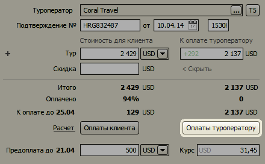
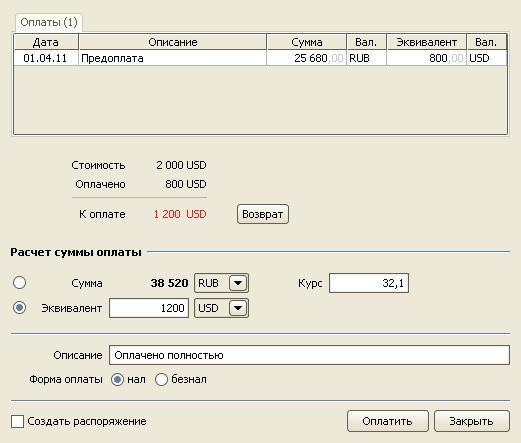
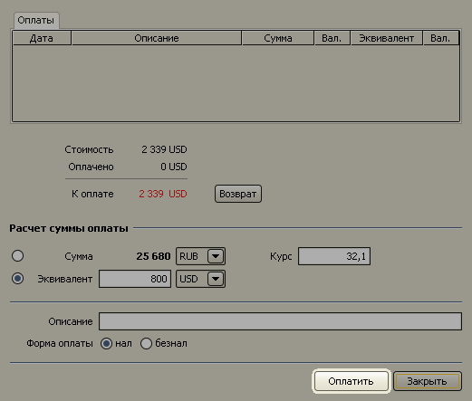
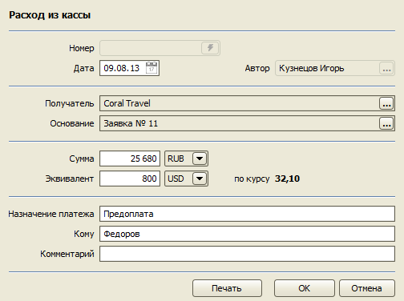
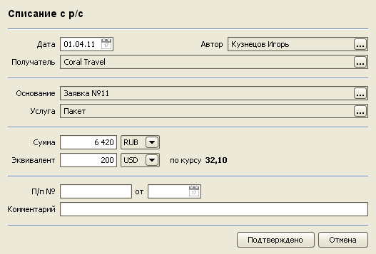
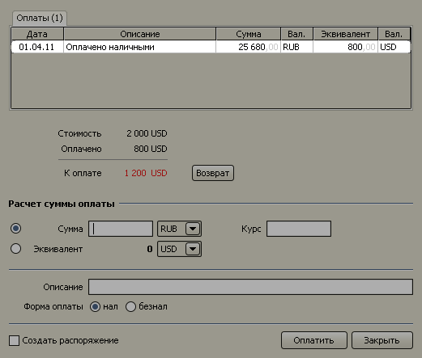
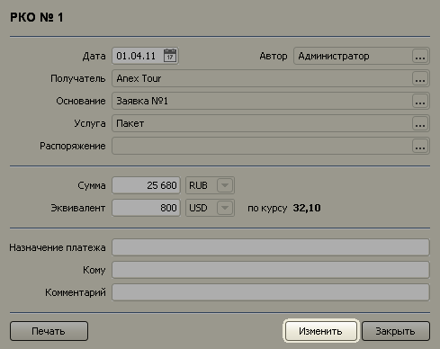
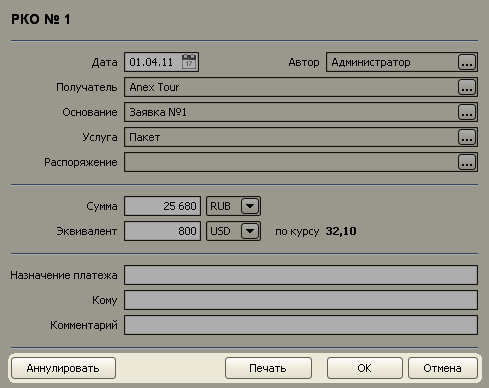
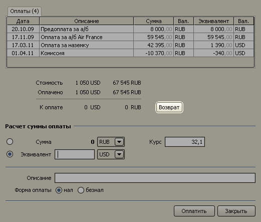
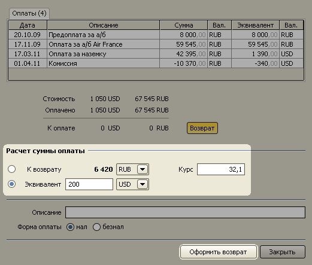

Оплаты туроператорам
Чтобы открыть форму оплат туроператору, нажмите кнопку "Оплаты туроператору", расположенную в нижней части формы заявки.

Сверху находится таблица произведенных оплат, под ней - текущий баланс взаиморасчетов. В нижней части
формы расположены поля, позволяющие рассчитать сумму оплаты, если производится пересчет из евро или
долларов в рубли.

Расчет суммы оплаты
Расчет суммы оплаты туроператору производится аналогично расчету суммы оплаты клиента.
Регистрация оплаты
Для примера, оплатим туроператору $800 (по курсу 32,1). Активируйте поле "Эквивалент" с помощью радио-кнопки
и внесите туда сумму 800. В поле "Курс" введите значение 32,1. В поле "Сумма" появится сумма в рублях, которую необходимо
внести в кассу туроператора. Нажмите кнопку "Оплатить", выбрав форму оплаты (наличную или
безналичную).

Наличный платеж
Если выбрана наличная форма расчета платежа, откроется окно документа "Расход из кассы".
В поле "Кому" введите фамилию человека, получающего деньги, и нажмите кнопку "Печать"
для печати расходного кассового ордера.

Безналичный платеж
Если выбрана безналичная форма расчета платежа, откроется документ "Списание с р/c".

Нажмите кнопку "Подтверждено" для подтверждения платежа.
Изменение платежей
В многопользовательской версии, если пользователь имеет роль кассира, он может вносить изменения в платежном документе или аннулировать его.
Платежные документы открываются двойным кликом мыши по строке таблицы платежей.

Для того чтобы изменить информацию о платеже нажмите кнопку "Изменить".

Появится возможность аннулировать платеж или внести в него изменения.

Оформление возврата
Для того, чтобы оформить возврат нажмите кнопку "Возврат".

Введите сумму к возврату или ее эквивалент и нажмите кнопку "Оформить возврат".

Оформление возврата происходит аналогично платежам туроператору, только вместо РКО оформляются ПКО, а вместо списания
с р/с происходит поступление на р/c.
Остались вопросы? Напишите нам на e-mail